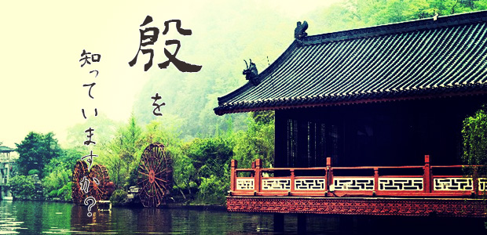

GW真っ盛りの今日この頃、みなさんいかがお過ごしですか？ 元来出不精の私は、長いお休みだからといって旅行に出かけたりすることはほとんどありません。何をするでもなく自宅に引きこもり、無為の毎日を過ごしています。そうなると、退屈を紛らわせるために本を読むのですが、今回はちょっと皆さんにご紹介したい一冊を見つけました。
その名も『殷 ―中国史最古の王朝―』（落合淳思著・中公新書）。

「殷（いん）」という単語、聞き覚えがある人も多いのではないでしょうか。中学一年生で習う「四大文明」。エジプト・メソポタミア・黄河・インダスの四つですが、この中にある黄河文明というのは、主にこの「殷」王朝を指します。殷は今から3000年以上前に実在した中国最古の王朝であり、私たちが普段使用している漢字も元をたどれば殷代に作られました。四大文明と同時にならった「甲骨文字」が漢字の先祖に当たります。
この本は、中国史最古の王朝の様子を、当時甲骨文字でしたためられた占いの記録を読み解くことで精密に再現していくものですが、新書版の体裁に似合わぬハードな内容になっています。”殷とはこんな時代だった”とストーリー仕立てで教えてくれる入門書を期待して手を出すと痛い目に遭うかもしれません。全編を通して作者が提唱する説が「なぜ正しいと思うのか」について、資料を基に細かく論証しているため、途中いろいろと退屈な部分が出てきます。そこを読み飛ばさずにしっかりと論理の筋を追っていくためには、読む側も本気で相対する必要があるでしょう。しかし、その労に見合うだけの面白さがこの本にはありました。
高校で世界史を学んだ人であれば、殷が強大な神権国家であったことを覚えているかもしれません。殷代には非常に精巧な青銅器の器や武具が数多く作られています。古代とは思えないような精緻な模様を持ったそれは現代の技術をもってしても再現できないほどだそうです。これらの素晴らしい青銅器は主に祭祀に使われていましたが、その儀式には生け贄も欠かせません。実際に殷代の遺構を発掘したところ、生け贄に捧げられたとおぼしき人骨が大量に発見されています。さらに、発掘された王の墓からは、王の死に際して殉死させられた多くの奴隷たちの遺骨も見つかりました。こうして見てみると、なにやらおどろおどろしい不気味な古代文明のイメージが思い浮かぶことでしょう。しかし、この本を読んでみると、殷に対するそんなイメージは一変します。
その一例が、「殷代の人々は占いに細工を施し、自分たちが望む結果を引き出していた」というもの。著者は当時の占いを実験で再現して、占い結果が操作可能であり、実際に操作されていたことを実証します。しかし、現代の私たちはそれを聞いてもあまり驚かないかもしれません。なぜなら、現代人の我々はそもそも占いを信じていないのですから。もちろん個人的な体験から信じている人はいるかもしれませんが、彼らもまた「国の大事を占いで決める」と言われたら、さすがに反対するのではないでしょうか。しかし、古代の人々は占いを本気で信じています。占いを通じて神がその意志をこの世に顕している。さらに踏み込んでいえば、神は存在する。そう確信していたからこそ、人や動物を生け贄に捧げ、巨大な建造物を建てたのです。にもかかわらず、占いの結果が操作されていたとしたら？ それは神の存在が信じられていなかったということの証左になるでしょう。もし神の存在を信じているのならば、その意志をねじ曲げるような行為は怖くてできないはずなのです。
つまり、殷代の占いが結果を操作されていたということは、当時の人々、少なくとも占いを実行していた人々は神の存在を心の底から信じてはいなかったということです。ではなぜ、神はいないと知りながら、存在しない神のために大量の生け贄を捧げたのでしょうか。この問いを考えると、歴史を学ぶ意味が見えてきます。
私たちは過去の人々を「劣っている」ものと見なす傾向にあります。だから古代の人々が大量の生け贄を神に捧げたといっても特に驚きはしません。「まだ科学的な考え方を知らない”野蛮な人々”だから、そんな蛮行をしてもしょうがない」。そう思っているわけです。しかし、本当にそうでしょうか？ ひょっとしたら私たちがそう思い込んでいるだけで、当時の人々も我々と変わらぬ合理的な発想をしていたのかもしれません。その上で生け贄という手段を選んでいるとしたら、その目的はなんでしょう？ このように考えていくと、これまで「野蛮」の一言で片付けてきた様々な出来事が全く違った姿を見せることになります。
今日ご紹介したこの本には、このような考え方が繰り返しのべられています。本編がすべてこの考え方に貫かれているといってもよいでしょう。
「なぜ歴史を学ぶのか」という問いへの答えの一つがそこにあります。つまり、「自分たちが無意識にかけている色眼鏡に気づくため」という答えです。
殷という謎に包まれた古代文明について詳しく知りたい人も、歴史とは何かを考えたい人も、ともにおすすめの一冊です。